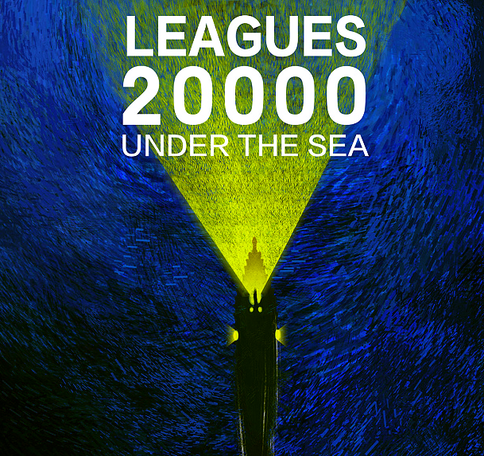

看看他们在推荐的书目
|  |
在我看来，这是为什么读书很重要的最大原因。就像我们的身体需要食物，来维持身体正常运转一样。我们的大脑需要持续学习新的事物，才能达到最佳状态。你既可以阅读小说也可以阅读其他非小说类的书籍，都能获得这样的好处。研究表明，读书能够改变你的大脑结构，让你更有同情心。改善认知过程。多读书，你就会变得更聪明因为你吸收了大量的信息，使你的大脑处于最佳状态。《权力的游戏》里有这样一段话很好的总结了这一点：“我哥哥有他的宝剑，劳勃国王有他的战斧，我则有我的大脑。好脑筋需要书本，如同宝剑需要磨刀石才能保持锋利。”
书籍有助于扩大你的词汇量，使你能够更好的表达自己，这样你的言谈会更精炼、更具智慧。同时因为阅读拓宽了你的知识，你就可以加入到更多的社交对话中去。通过阅读获得的知识，可以让你和不同的人群找到更多相同的话题。比如科技相关的话题，或者一本根据书改编的热门电影，这都可以成为你与他人交流的话题。
作为一个读者，你会接触到来自不同思想、不同信仰、不同种族的人不同的故事。这有助你开放思想，使你更能接受多元化的事物。
【别抱怨读书苦，那是你去看世界的路】读书，是世界上门槛最低的高贵举动。读书能使人虚心，较通达，不固陋，不偏执。书中未必有黄金屋，但读书会带给你更多人生的可能。在书香文墨里，认识世界，成就自己。
组长: 陈刚 策划：梅卓航 执行人:王鑫圆、邹剑波